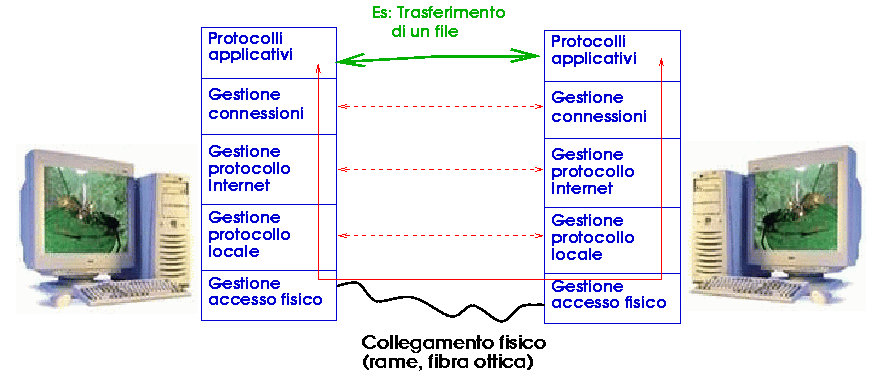

| Protocolli di rete |
Nelle telecomunicazioni, per protocollo di rete (o anche protocollo di comunicazione) si intende la definizione formale a priori delle modalità di interazione che, due o più apparecchiature elettroniche collegate tra loro, devono rispettare per operare particolari funzionalità di elaborazione necessarie all'espletamento di un certo servizio di rete. In termini equivalenti si tratta dunque della descrizione a livello logico del processo di comunicazione (meccanismi, regole o schema di comunicazione) tra terminali e apparati preposto al funzionamento efficace della comunicazione in rete. Queste apparecchiature possono essere host, computer clienti, telefoni intelligenti, Personal Digital Assistant (PDA), monitor, stampanti, sensori ecc.
In particolare un protocollo prevede la definizione dei linguaggi costituiti dai messaggi scambiati, messaggi che devono potersi interpretare correttamente. L'aderenza ai protocolli garantisce che due software in esecuzione su diverse macchine possano comunicare efficacemente, anche se sono stati realizzati indipendentemente cioè interoperabilità. È evidente l'importanza della standardizzazione dei protocolli di rete. L'implementazione informatica dei protocolli di rete definisce, all'interno dell'architettura di rete, il cosiddetto software di rete, presente usualmente all'interno del sistema operativo ed elaborato dalla scheda di rete.
In senso più lato, un protocollo di comunicazione si può definire come un insieme di regole che vengono stabilite per instaurare una comunicazione corretta: ad esempio un italiano e un cinese per comunicare potrebbero mettersi d'accordo nell'utilizzo della lingua inglese.
|
 |